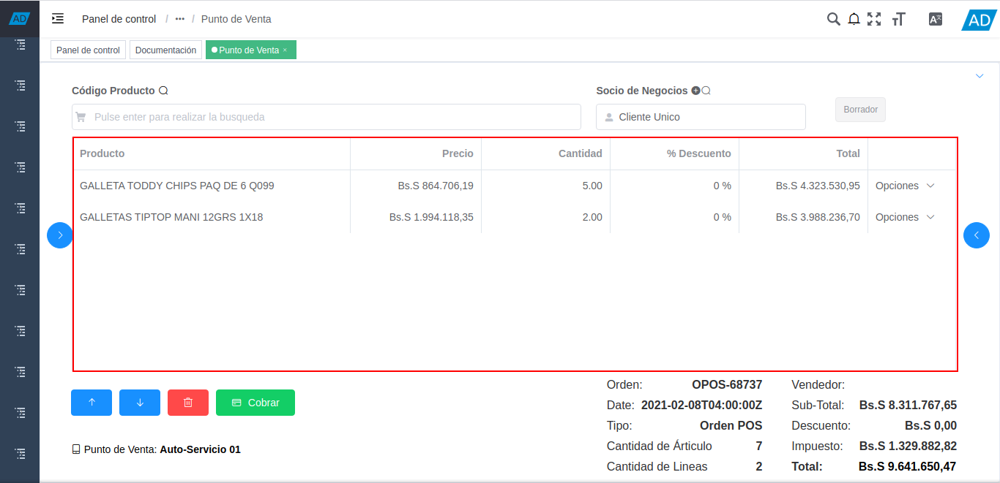

4.2. Toma de Pedido¶
El proceso toma de pedido consiste en la venta de los productos por medio del documento “Orden de Venta”, en el cual se cargan los datos del cliente, los productos y el cobro. Al realizar el cobro de la misma, se generan de manera automática los documentos “Cobro”, “Factura por Cobrar” y “Entrega”.
El documento del cobro se genera en la ventana “Caja”, con la cuenta caja pos en la cual se realizó dicho cobro. Este es asociado a la línea del registro de cierre de caja de la cuenta “Caja POS”, creado al momento de la apertura de caja.
Adicional a ello, el documento “Factura por Cobrar”, es generado en la ventana “Documentos por Cobrar”. Mientras que el documento “Entrega”, es generado en la ventana “Entrega (Cliente)”.
Para mejor referencia de lo explicado anteriormente, se presenta a continuación el diagrama del proceso “Toma de Pedido POS”, con la finalidad dar a conocer el comportamiento de ADempiere ante dicho proceso.
Imagen 1. Diagrama de Toma de Pedido POS

4.2.1. Ejecución del Proceso¶
Ubique y seleccione en el menú de ADempiere, la carpeta “Gestión de Ventas”, luego seleccione la carpeta “Órdenes de Venta”.

Imagen 2. Menú de ADempiere
Podrá visualizar la carpeta “Órdenes de Venta”, con la ventana “Órdenes de Venta”, que permite crear y modificar las mismas. Adicional a ello, también contiene la carpeta “Punto de Venta”, con el formulario del punto de venta y el smart browser de cierre de caja.

Imagen 3. Ventana Órdenes de Venta
Seleccione el formulario “Punto de Venta” que se encuentra dentro de la carpeta “Punto de Ventas”.

Imagen 4. Selección de Formulario Punto de Venta
Podrá visualizar la ventana del formulario “Punto de Venta”, con diferentes campos que permiten registrar en ADempiere de manera fácil y sencilla, la venta de los productos.

Imagen 5. Ventana del Formulario Punto de Venta
La interfaz de la ventana del formulario “Punto de Venta”, se encuentra definida de forma específica en el documento Interfaz de Punto de Venta, elaborado por ERPyA. Realice cada uno de los procesos explicados a continuación para obtener un resultado exitoso en la toma de pedido por el punto de venta.
Note
El formulario “Punto de Venta”, crea de manera automática un registro nuevo de “Orden de Venta”, al cargar un producto al mismo.
Ingrese la información del socio del negocio “Cliente”, en el campo “Socio de Negocios”. Dicho procedimiento se encuentra explicado en el proceso Panel de Socio de Negocios, del material Interfaz de Punto de Venta, elaborado por ERPyA.

Imagen 6. Selección del Cliente en el Formulario Punto de Venta
Proceda a cargar los productos desde el catálogo de productos. Dicho procedimiento se encuentra explicado en el proceso Catálogo de Productos, del material Interfaz de Punto de Venta, elaborado por ERPyA.

Imagen 7. Carga de Productos desde el Catálogo de Productos
Si lo desea, puede ingresar los productos a la orden de venta ingresando el código o nombre del mismo en el panel de búsqueda de productos. Dicho panel se encuentra explicado de manera detallada en el material Panel de Búsqueda de Productos, elaborado por ERPyA.

Imagen 8. Carga de Productos desde el Panel de Búsqueda de Productos
Podrá visualizar en las líneas de la orden, los productos cargados con su respesctivo precio, cantidad, porcentaje de descuento y total del producto. Esta sección se encuentra explicada de manera detallada en el material Líneas de la Orden, elaborado por ERPyA.

Imagen 9. Líneas de la Orden
Para posicionarse sobre un registro de la línea de la orden, eliminar el mismo o cobrar la orden de venta, puede realizarlo con ayuda de las opciones que contiene el punto de venta. Dichas opciones se encuentran explicadas en el material Opciones del Punto de Venta, elaborado por ERPyA.

Imagen 10. Opciones del Punto de Venta
La información del registro de la orden en el que se encuentra, puede ser visualizada en la parte inferior derecha del formulario. Dicha sección se encuentra explicada de el material Información de la Orden, elaborado por ERPyA.

Imagen 11. Información de la Orden